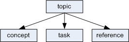

Inheritance is a key technical feature of DITA, as it is
inheritance that enables
specialisation
of information types.
In object-oriented programming, inheritance is a way to form new program
module
classes using classes that have already been defined. DITA
is designed around the principle of inheritance. The DITA base content model
shows that even the three base information types (concept, task and reference)
evolve from the
topic
proto information type, and share a common base structure
whose characteristics they inherit.
Evolution of base information types

This idea of inheritance continues down. A task's
step element is based on topic's
li element.
The
DITA
Language Reference
records the inheritance of each element. For example, the
step element's inheritance is shown as
topic/li, indicating that a
topic information type's
li element is
specialised
to become
task/step, a
task information type's
step element.
DITA's inheritance model makes it easy to
specialise
topics or special elements within topics. You only have to define how the
element is different from its immediate ancestor.